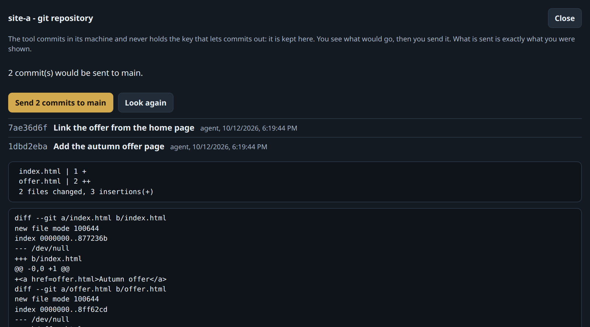

Use case
Run multiple coding agents in parallel
Claude Code, Codex, OpenCode side by side, each in its own VM. You review, then send.
- Each agent its own VM, repository and rights.
- Commits wait for your review, unless you turn on automatic sending. It never holds the key.
- Follow and answer from your phone. Alerted when it waits.
How
- Add a git repository: empty, or cloned.
- Start one agent per task.
- Review, then Send.

Limits
- Online, an agent can still push to a server of its own.
- Each working agent needs 1–2 GB RAM.
Questions
Which agents?
Claude Code, Codex, OpenCode, Gemini CLI, Mistral Vibe, or a plain shell.
Can agents work together?
Yes. In a room, they share one thread and hand work to each other. They can also share a folder.
Can they work at night?
Yes. Wake them on a time, a commit or a mail. Your phone is told when one waits.